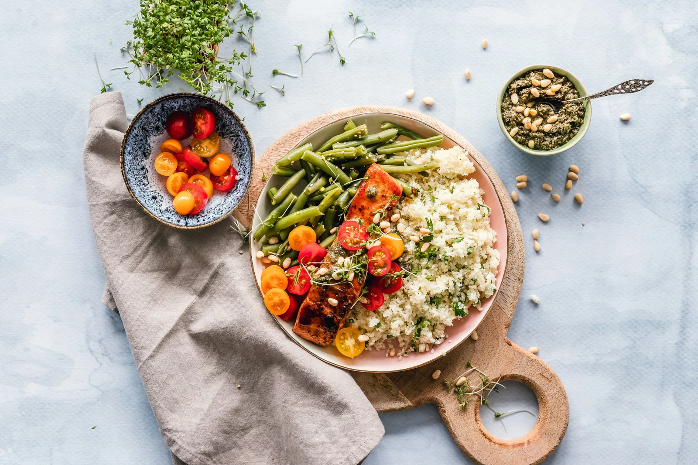
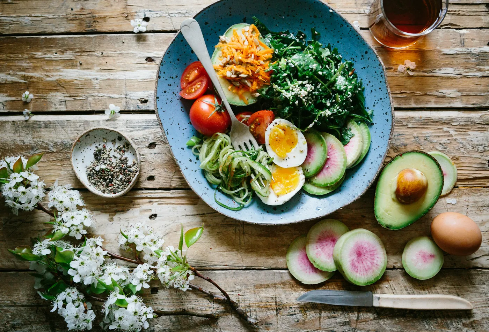

SIMPLES. GOSTOSO. DIGITAL.
Seu próximo
favorito está à mesa.
Explore uma seleção de sabores, descubra novos favoritos e monte sua sacola em poucos toques. Uma experiência digital feita para ser leve.
Feito para facilitar
uma experiência clara em qualquer tela.

FEITO PARADESCOBRIR ✳
Novos saboresUma descoberta a cada visita
Na sua medidaEscolha e revise sua sacola
✳
✦
01 — EXPLORE02 — ESCOLHA03 — REVISE SUA SACOLA↓
UM MUNDO DE OPÇÕES
O que combina com você?
Toque em uma categoria e encontre algo para hoje.

MENOS PASSOSMAIS SABOR
PENSADO PARA VOCÊ
Escolher bem também deve ser simples.
Uma interface direta, detalhes na medida certa e uma sacola que acompanha suas escolhas. Tudo organizado para deixar a navegação mais agradável — do primeiro toque à revisão final.
01
Encontre rápidoBusca e categorias que ajudam na descoberta.
02
Escolha com clarezaDescrições e valores sempre à vista.
03
Revise antes de sairQuantidades e total reunidos na sacola.